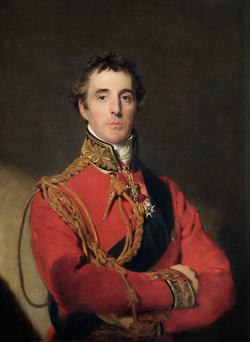
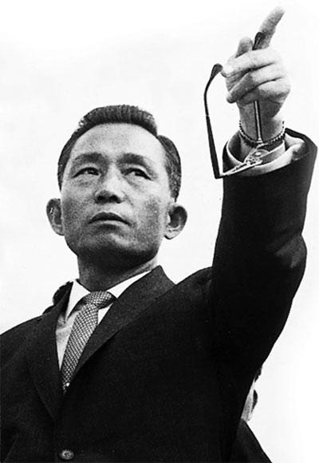
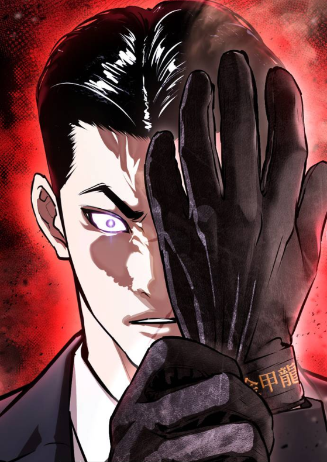
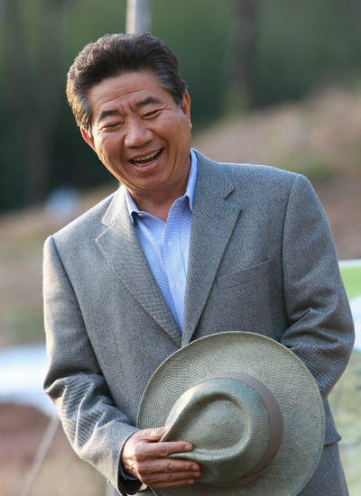
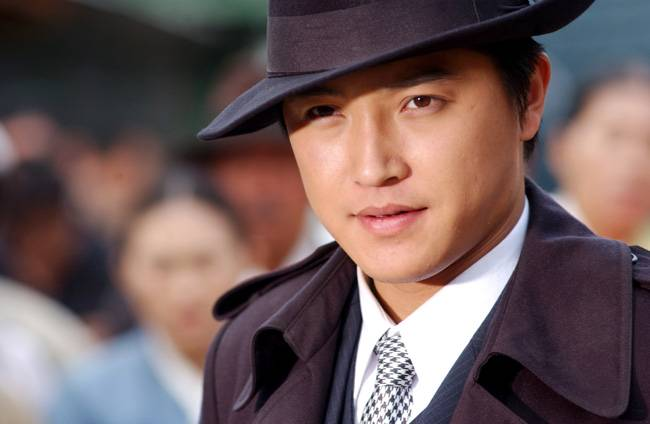

저는 한동글로벌학교에 오고 나서부터 과분하게도 여러번 리더로 섬길 기회들이 많았습니다.
내가 우리 반, 우리 기숙사를 대변하는 사람이 된다는 것은...
기쁘기도 하지만 때론 참으로 과분하고 책임감도 막중합니다.
그래도 힘들고 바쁜 리더의 자리에 올라갈 수 있다는 것은 축복이라고 생각합니다.
반장으로 1년, 기숙사장으로 1년, 그리고 또 다시 반장으로 1년을 섬길 수 있게 되어 정말 행복했죠.
이는 제 자신의 겸손과 리더십을 기를 수 있는 시간이 되었습니다.
항상 좋은 일만 있었던건 아니었지만, 결과적으론 리더의 자리로 저는 더 성장할 수 있게 되었습니다.
그럼 이번 별에선 우리 같이 리더십에 관해 생각해볼까요?
진정한 리더십은 무엇일까요?
"사과는 모든 희망과 바람, 또 불안함의 가면을 벗겨낸다.
사과할 때 인간은 가장 인간다워지고 일상생활에서 쓰고 있던 가면을 벗고 진실한 얼굴을 하게 된다.
사과는 더 이상 약자나 패자의 변명이 아니라 ‘리더의 언어’로 바뀌어야 한다.
사과란 단지 잘못을 시인하고 용서를 구하는 행위 이상의 가치를 지녔다."
[존 카도르]

"신사를 알아보는 방법은 많지만 절대로 실패하지 않는 방법이 한 가지 있다.
아랫사람들을 어떻게 대하는가? 아녀자들에게 어떤 행동을 보이는가?
고용주는 직원을, 스승은 제자를, 장교는 부하를, 즉 자기보다 약한 사람을 어떻게 대하는가? 하는 것이다."
[제1대 웰링턴 공작 아서 웰즐리]

"내 一生 祖國과 民族을 爲하여"
[박정희]

"의형제 따위가 아니라 한 식구다."
[외모지상주의]-김기명

"대통령 욕하는 것은 민주사회에서 주권을 가진 시민의 당연한 권리입니다.
대통령 욕하므로써 주권자가 스트레스를 해소할 수 있다면
전 기쁜 마음으로 들을 수 있습니다."
[노무현]

"선배면 선배답게 행동하십시오. 후배들이 뭘 보고 배우겠습니까?"
[야인시대]-김두한
"...(전략) 결국 리더십은 때로는 절대적이자, 때로는 상대적이다."
[리더십의 상대성이론, 2021]-김은호
"어려운 결정을 무작정 미루는 것,
단 한 사람의 마음도 불편하지 않게 하려고 노력하는 것,
기여도와 상관없이 모두를 똑같이 친절하게 대하는 것,
리더의 이런 행동 때문에 정말로 미치는 쪽은 그 조직에서 가장 창의적이고 생산적인 사람들뿐이다."
[콜린 파월]
"나는 내가 싫어하는 사람을 승진 시키는 걸 주저하지 않았다.
오히려 정말 뭐가 사실인지를 말하는 반항적이고 고집 센, 거의 참을 수 없는 타입의 사람들을 항상 고대했다.
만약 우리에게 그런 사람들이 충분히 많고 우리에게 이들을 참아낼 인내가 있다면 그 기업에 한계란 없다."
[토머스 J. 왓슨]
"왕이란!
누구보다 강렬하게 살고
모든 이를 매혹시키는 자를 가르키는 것이다!
모든 용자의 선망을 지고, 그 도표로서 서는 자야말로, 왕!
따라서!
왕은 고독하지 않다.
그 위대한 뜻은, 모든 신민이 품은 뜻의 총합이기 때문이다!"
[페이트 제로]-이스칸달
"만일 당신이 배를 만들고 싶다면,
사람들을 불러 모아 목재를 가져오게 하고 일을 지시하고 일감을 나눠주는 등의 일을 하지 마라.
대신 그들에게 저 넓고 끝없는 바다에 대한 동경심을 키워줘라."
[앙투안 드 생텍쥐페리]